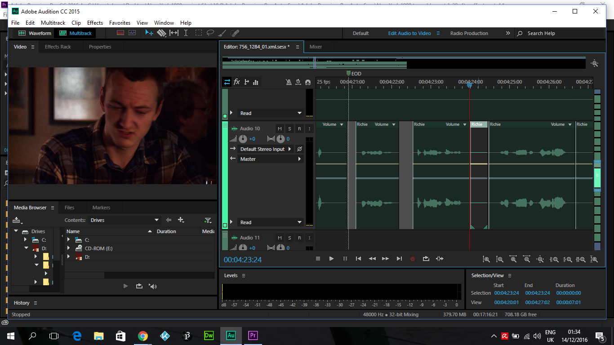

This is a 30 Second begins with a person walking through a wooded area in the rain, there is the distant sound of footsteps through the different terrain which grow louder as the person moves to a more sheltered space. The person then arrives at a building and enters.
For the video project, after the public screening i decided to try and fix the obivious audio problems, such as the dry sound from the voice recording sessions, also the problems with the voices not syncing properly to the audio. I linked the project over from premiere pro to Audition where i first focused on the voice sync problem and i was able to fix most of this using the voice synchronization tool on the problematic clips. from the original vidio audio, i was able to reference the pitch that was made by the actors on the day of shooting. the other tools i used were the noise remover, dehisser, the parametric equalizer, the hard edge limiter and the 20 band equalizer. this removed most of the bad high and low frequincies but it was still hard to remove some of the nasally sounds from the voices.